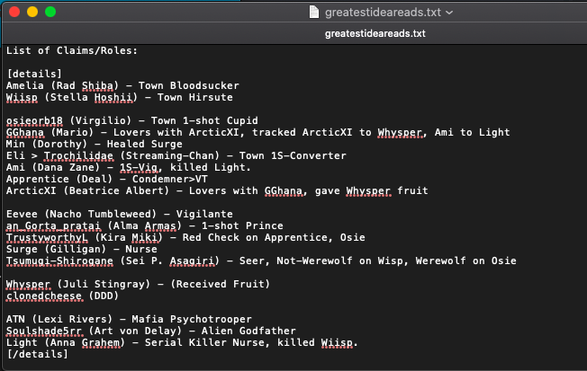

I thought I was good at big games
I realize I was wrong
reeeeeee

Yeah, because I believe that Tsumugi is firmly scum. I’ve said this since my first read of them this game. That read has not changed and is unlikely to change unless Chad pulls a rabbit out of his hat.
Wow, that’s incredibly disingenuous. My PoE changed with new information! Oh my god! Whatever would we do if people could change their PoE with new information?!?
I was forming my reads once more when I finally got a satisfactory statement of a townread on you. So I removed you from the PoE when I made it again, off of claims instead of off of gutreads.
Being disingenuous slides you down to starting to drop out of null, though.
That said, the PoE in that “3-4 non-town” post is based on claims. The readlist and associated PoE in earlier posts is based on gutreads. I know it might be hard for you to understand that town players use multiple methods of analysis.
Like, if I get eliminated toDay, I say “Okay, that was a bastard game stuffed with openly anti-Town players” and move on with my life.
This still stands:
@Whysper: You can see the same list from my notes file -

Like, it’s just a list of claims. It’s the more recent tool I used to sort people. Congrats, a list of claims didn’t come to the same result as a list of my miscellaneous gutreads of people while skimming through the thread trying to catch up as fast as I could. On D2, for that matter, since it’s not like that was something I really talked about much on D3.
Either you’re pushing something that isn’t remotely alignment indicative because you’re scum aiming for a miselim, or you’re extremely disconnected from the thread and any knowledge or experience of town players taking notes.
If I take that list of claims, and then sort the people who don’t seem instantly likely to have trueclaimed as town based on current gutreads, I get the lower section of that list, possibly with some names added or removed. Clonedcheese feels like newb town as far as this game is concerned. So I suggested that he be removed from PoE. For some crazy reason, people seem to townread you (Whysper) based on meta. So you get placed near the far end of the PoE with Eevee and TL. Out of sight, out of mind, for the time being. Gorta, Surge, and Tsumugi are all scummy, particularly Tsumugi, and all more scummy than TL or Eevee.
Should more information enter the thread, those reads might change. But for the time being, those are what my reads are. Recently, I’ve started to consider that Eevee and TL seem much more reasonable than you and that people have been bringing up points about Arctic. So Eevee and TL might be pushed closer to the far edge of the PoE and you and Arctic would be pushed closer to the middle of the PoE.
It’s almost like it’s a simple, easy to understand, logical process.
Personally, I don’t care how your role was used, which mind you it was used in a scummy way. The problem is you got two seer checks on you.
Not sure how you think you survive this day.
Like I said I don’t care about your role, I have a seer check on you, therefore, your getting buried.
You’re either lying and/or there’s another psychotrooper. Given that you’ve matched your scum play to a T, you’re probably just lying.
See previous comment about lying. Also “you’re” is different from “your” in that second sentence.
@ChopChop - You can see that as a town player, I’m interacting with my scumreads so that I can determine whether or not those scumreads are accurate.
Something that might help is if you look at a player or two in isolation.
The players who are most contentious at the moment are myself, Tsumugi, Gorta, and Ami. If you look at those 4 players, maybe you can judge based on our play whether we are town or scum.
Tsumugi and I have conflicting claims and I’ve been scumreading them all game for fitting into their standard scum pattern and being generally scummy. Tsumugi’s red checks have both conveniently been oriented around the claims of others.
Tsumugi and TL claim to have red checks on me, but as we’ve seen already, red checks have easy potential to be fake or wrong. There are also a few players who are insane enough to believe that I would stoop to using a mod error to angleshoot myself as town, especially when most of them know that I value game sanctity more than the vast majority of hosts or players in the global mafia community to the degree that some of them have received warnings, modkills, and even temporary blacklistings because of those values.
Meanwhile, Gorta I believe has been found to just be generally scummy (that’s roughly where my read on him is).
Ami was tracked to a kill (and was also generally scummy).
You have to remember that I am usually scummy as either alignment, which means people claim I am hard to read
I’ve read this at the very least and I’m conflicted on this. I don’t think both Tsumugi and Tl would be lying… I personally believe that if they are wrong, there would be a psychotrooper.
@osieorb18 what do you make of the claim that Arctic must be scum since they were blocked N2?
Selfmeta bad
Edit: positioning
give me reason to beleive a 2nd psychotrooper exists.
gambler’s fallacy tells me that there’s no 2nd psychotrooper
logic tells me that gambler’s fallacy bad
 Six of one, half dozen of another. It’s rather depressing that I’m one of the only players this game who doesn’t have a scummy playstyle for whom there might be a degree of a reason to scumread me (if TL is town). Especially when one of the main players claiming checks on me (and Wiisp, who was conveniently also removed from the thread… Huh, it’s almost like Tsumugi is happier without people around who can read them…) is legitimately the scummiest player in the thread by a hundred miles.
Six of one, half dozen of another. It’s rather depressing that I’m one of the only players this game who doesn’t have a scummy playstyle for whom there might be a degree of a reason to scumread me (if TL is town). Especially when one of the main players claiming checks on me (and Wiisp, who was conveniently also removed from the thread… Huh, it’s almost like Tsumugi is happier without people around who can read them…) is legitimately the scummiest player in the thread by a hundred miles.
I’d been mulling over it and had started to consider Arctic somewhat scummy (still less scummy than probable psychotrooper Chad).
Disingenuous? So I can’t like question your PoE at all? Can’t comment on how it includes a few people that there’s not much reason to put in there at this point? I mean, yeah, of course things change. And we can start re-examining some of those others if for some reason the current PoE doesn’t include all the scum.
Man, I’m definitely not liking this condescending attitude of yours. Fine, you take notes. I do, too. I don’t know why you felt you had to go through all that explaining.
I simply noted that your PoE is quite wide and includes 3 or 4 players that aren’t even in most PoEs. Having a PoE like that can be scum-indicative, especially when they’ve been caught already, since they want us looking all over the place except at themselves.
You seem to conveniently leave out the fact that there are 2 separate red checks on you. And you are blasting people as anti-town and angle-shooting for daring to question all the oddities in your claim.
At this point, to believe you are town, we have to instead believe that the 2 others with red checks on you are scum instead. Or that there is some 2nd Psychotrooper which has a very small chance of even occurring. And also to believe that there was indeed a mod error (which like someone said, some sort of error may have occurred) and that the mod error resulted in an anti-town role with a town alignment. And that the previous player never hinted at despite complaining about other stuff. Or that the previous player somehow didn’t understand what was going on with choosing cards. Way too many coincidences or unlikely situations to believe instead of the simple idea that you are scum that has been caught.
2nd psychotrooper in the form of Chad or one of their teammates is the most likely because TL isn’t particularly scummy. That said, it’s also just possible that the two of them are coordinating and there are no town seers. Given that it would not be strange for people to say “Hey, Werewolf is less notable than other roles” and “Oh hey, a town vanilla role was discarded by these two players which means the chance of both of them being town is significantly less than 25%, and even less when you account for the fact that one of them is the scummiest player in the thread by behaviour by a huge margin”, trusting two seer claims is incredibly foolish.
Not really worth argueing anyways, we have a tracked kill, a blocked kill possibly, and a double werewolf check.